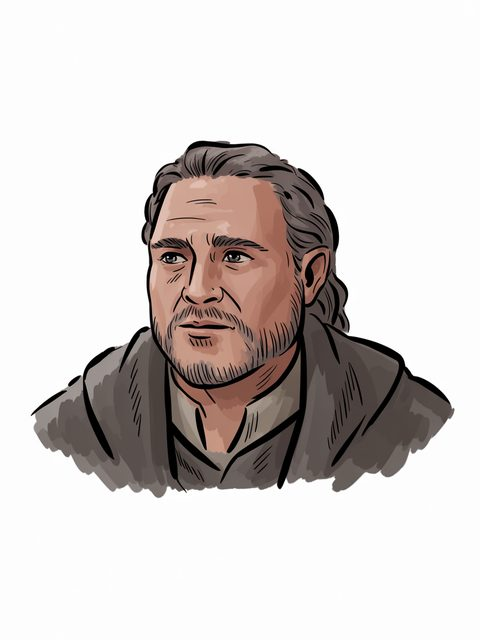

The Arda Archive · Volume III · Records of Persons
The Arda Archive · Ecthelion IIccclxiii
Ecthelion II
House of Húrin (Stewards)

House of Húrin (Stewards)
Of the house
House of Húrin (Stewards) of Gondora
The dates as the archive holds them
–T.A. 2984b
Style and office
Welcomed 'Thorongil'c
What the corpus says
“the rule of his father, Ecthelion II, he must have greatly desired to consult the Stone, as anxiety”e
“2930 Arador slain by Trolls. Birth of Denethor II son of Ecthelion II”f
“south intruding into their ancestral domain; a reluctance which strongly urged to Ecthelion II by Thorongil, and it was the pol”g
“Ecthelion II after the desertion of Ithilien in TA 2954. The Rammas was”h
“(including King Thengel of Rohan and Ecthelion II, Ruling Steward of”i
“25 Ecthelion II born 2886 lived 98 years 2984”j
“Ecthelion (II) (1) Lord of the people of the Fountain in Gondolin; called”k
“Sauron returns to Mordor - 2942 Ecthelion II 2984 Gilraen 3007 A r a th o m II 2 9 3 3 Slain by Ores”l
a The text — LotR App A I; HoME XII, The Heirs of Elendil [C]
b The text — [I-H]
c The archive's reading — [I-H]
d The ruling — the owner's ruling of 13 August 2026, on the 552 generated images: 'we are free to use them'. That settles the LICENCE and does not settle the HAND, which is recorded above as what it is. [C]
e The text — Unfinished Tales of Numenor and Middle Earth · l.12781[C]
f The text — Appendix Tables Raw · l.798[C]
g The text — Mallorn 43 · l.333[EXT]
h The text — The Complete Guide to Middle Earth · l.12933[EXT]
i The text — The Complete Tolkien Companion · l.1293[EXT]
j The text — The Peoples of Middle Earth · l.6760[C]
k The text — Index · l.5036[C]
l The text — Mallorn 41 · l.1560[EXT]
AT·iijThe
A triskele boss — the archive's own hand
Volume III · Records of Personsccclxiv
The name stands in 34 cited lines, in 10 of the corpus's 192 texts — most often in The Lord of the Rings (8), The Peoples of Middle Earth (6), The Complete Tolkien Companion (6).m
The drafts against the published text
8 cited lines stand in 2 volumes of the drafts and 14 in 3 of the published books — the published text carries it more often than the drafts did.n
Arms of the Kings of Gondor — its realm, as a device and not a likeness
of House of Húrin (Stewards); in Gondor; child of Turgon; father or mother of Denethor II; –T.A. 2984.q
Named in the same lines
Denethor II (7), Turgon (4), Turgon (4), Aragorn II Elessar (3) — a shared line is a fact about the line, not a claim that the two met.r
counted from corpus lines that name BOTH records. A shared line is a fact about the line, not a claim that the two met; `eg` names a line a reader can open. [C]
What was looked for and not found
a marginal hand recording a change to this record — searched over 59 verified notes in site/arda_hands.json, and nothing was found.s
What was looked for and not found
recorded by-names for this figure — searched over 47 worked sets in site/arda_epithets.json, and nothing was found.t
m Counted — site/arda_apparatus.json[C]
n Counted — site/arda_apparatus.json[C]
o Counted — site/arda_apparatus.json[C]
p Counted — site/arda_apparatus.json[C]
q The table — LotR App A I; HoME XII, The Heirs of Elendil[C]
Part of the Arda Archive — a corpus-first index of Tolkien's legendarium; claims are cited or marked how far they are inferred, silences are declared, and the colophon prints how many claims carry neither.